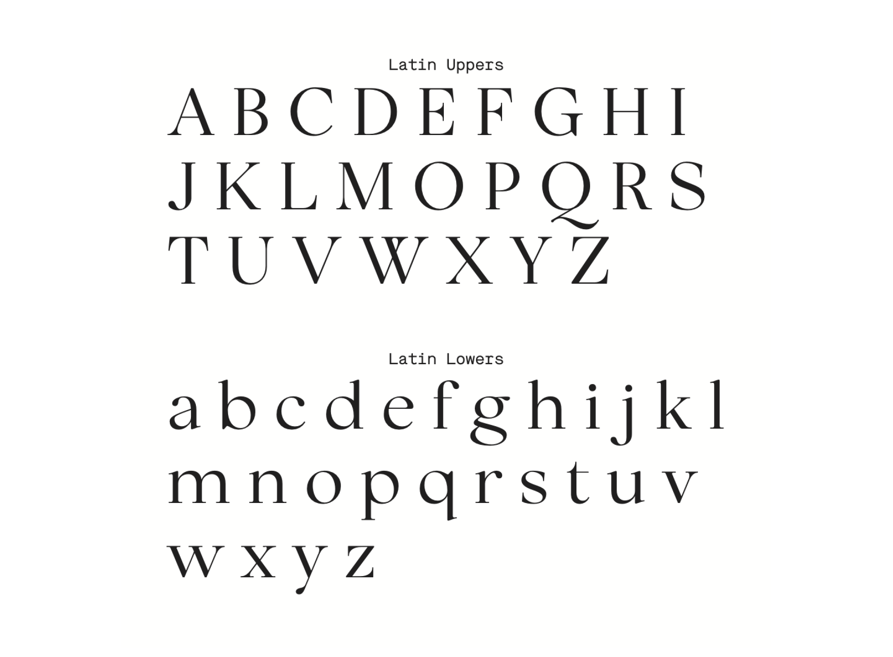
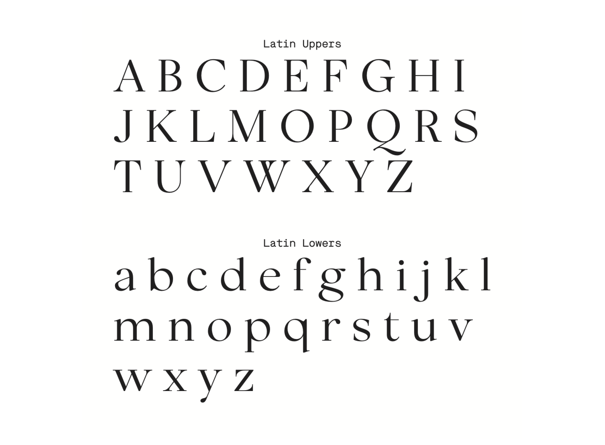

- SELECTED WORK
- 22
- 21
- 20
- 19
- 18
- 17
- ??
- About
Voices
2022, HuffPost
Identity, Web Design
Two month project to create a new visual identity and designs for HuffPost's Voices – a space for personal essays focusing on intersectional identities. Led and executed all design work including competitive research, moodboarding, brand identity, typography, visual design and animation design.
Releases Summer 2022.


 
